Every plot that autoplot() draws, using
png_ants: real ant bait data from the Mt Wilhelm
elevational gradient, Papua New Guinea. Each entry has three tabs: the
plot, the tidy table behind it, and the code. All plots use the
colour-blind-safe Okabe-Ito palette and
theme_tidydiversity() by default; see the publication figures article for
customisation.
Maps are in the companion package tidymapr; see its Gallery.
library(tidydiversity)
library(dplyr)
library(ggplot2)
set.seed(1)
wet <- filter(png_ants, season == "wet")Rarefaction and extrapolation by sample size
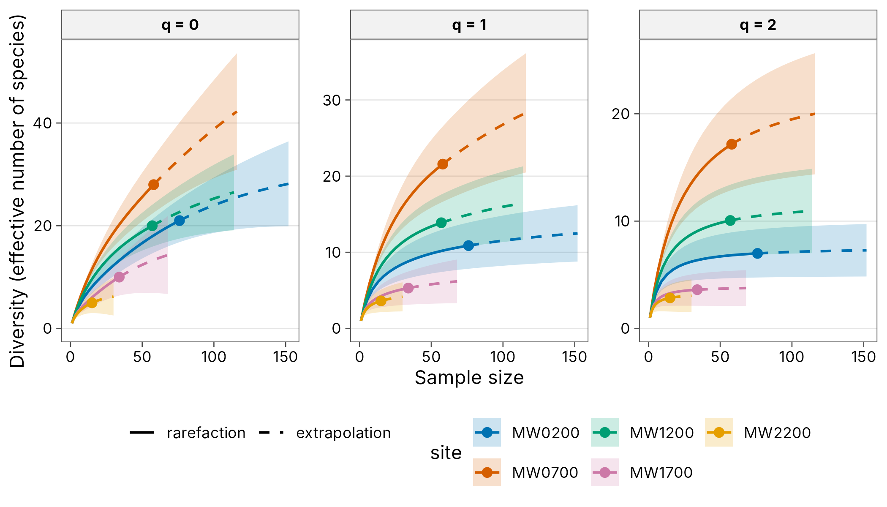
curves
#> # A tibble: 570 x 8
#> site q m method diversity coverage lower upper
#> <chr> <dbl> <dbl> <chr> <dbl> <dbl> <dbl> <dbl>
#> 1 MW0200 0 1 rarefaction 1 0.132 1 1.00
#> 2 MW0200 0 5 rarefaction 3.92 0.445 3.57 4.27
#> 3 MW0200 0 9 rarefaction 5.90 0.585 5.14 6.65
#> 4 MW0200 0 13 rarefaction 7.44 0.655 6.34 8.54
#> 5 MW0200 0 17 rarefaction 8.75 0.695 7.37 10.1
#> 6 MW0200 0 21 rarefaction 9.93 0.721 8.30 11.6
#> 7 MW0200 0 25 rarefaction 11.0 0.740 9.16 12.9
#> 8 MW0200 0 29 rarefaction 12.0 0.754 9.97 14.1
#> 9 MW0200 0 33 rarefaction 13.0 0.766 10.7 15.3
#> 10 MW0200 0 38 rarefaction 14.1 0.780 11.7 16.6
#> # i 560 more rows
curves <- div_rarefy(wet, nboot = 50)
autoplot(curves)Rarefaction and extrapolation by sample coverage
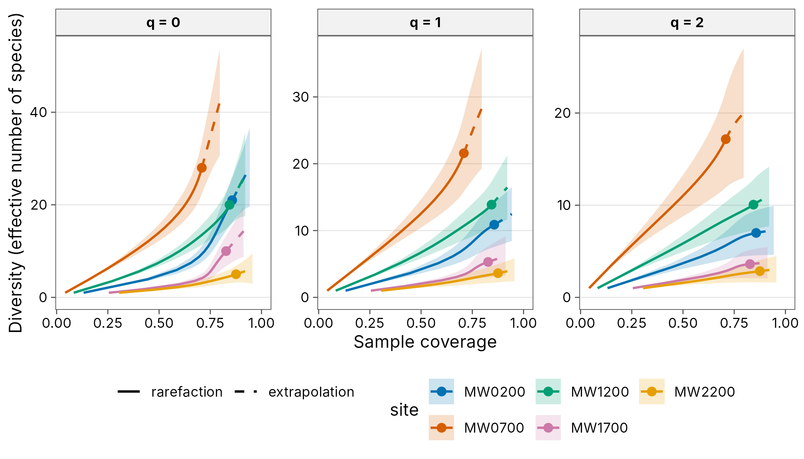
curves
#> # A tibble: 570 x 8
#> site q m method diversity coverage lower upper
#> <chr> <dbl> <dbl> <chr> <dbl> <dbl> <dbl> <dbl>
#> 1 MW0200 0 1 rarefaction 1 0.132 1 1.00
#> 2 MW0200 0 5 rarefaction 3.92 0.445 3.56 4.28
#> 3 MW0200 0 9 rarefaction 5.90 0.585 5.09 6.70
#> 4 MW0200 0 13 rarefaction 7.44 0.655 6.24 8.64
#> 5 MW0200 0 17 rarefaction 8.75 0.695 7.20 10.3
#> 6 MW0200 0 21 rarefaction 9.93 0.721 8.07 11.8
#> 7 MW0200 0 25 rarefaction 11.0 0.740 8.88 13.2
#> 8 MW0200 0 29 rarefaction 12.0 0.754 9.64 14.4
#> 9 MW0200 0 33 rarefaction 13.0 0.766 10.4 15.6
#> 10 MW0200 0 38 rarefaction 14.1 0.780 11.2 17.1
#> # i 560 more rows
curves <- div_rarefy(wet, nboot = 50)
autoplot(curves, x = "coverage")Curves for several groups
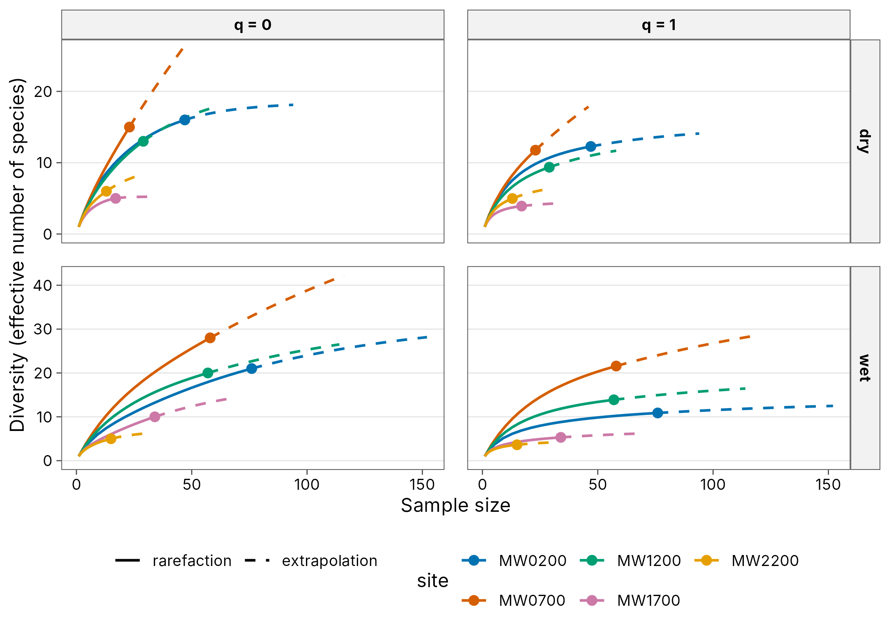
grouped
#> # A tibble: 740 x 9
#> season site q m method diversity coverage lower upper
#> <chr> <chr> <dbl> <dbl> <chr> <dbl> <dbl> <dbl> <dbl>
#> 1 dry MW0200 0 1 rarefaction 1 0.0814 NA NA
#> 2 dry MW0200 0 3 rarefaction 2.76 0.220 NA NA
#> 3 dry MW0200 0 6 rarefaction 4.94 0.377 NA NA
#> 4 dry MW0200 0 8 rarefaction 6.14 0.457 NA NA
#> 5 dry MW0200 0 11 rarefaction 7.67 0.549 NA NA
#> 6 dry MW0200 0 13 rarefaction 8.55 0.596 NA NA
#> 7 dry MW0200 0 16 rarefaction 9.70 0.652 NA NA
#> 8 dry MW0200 0 18 rarefaction 10.4 0.682 NA NA
#> 9 dry MW0200 0 21 rarefaction 11.3 0.720 NA NA
#> 10 dry MW0200 0 23 rarefaction 11.8 0.741 NA NA
#> # i 730 more rows
grouped <- div_rarefy(png_ants, q = c(0, 1), .by = season)
autoplot(grouped)Diversity at equal coverage
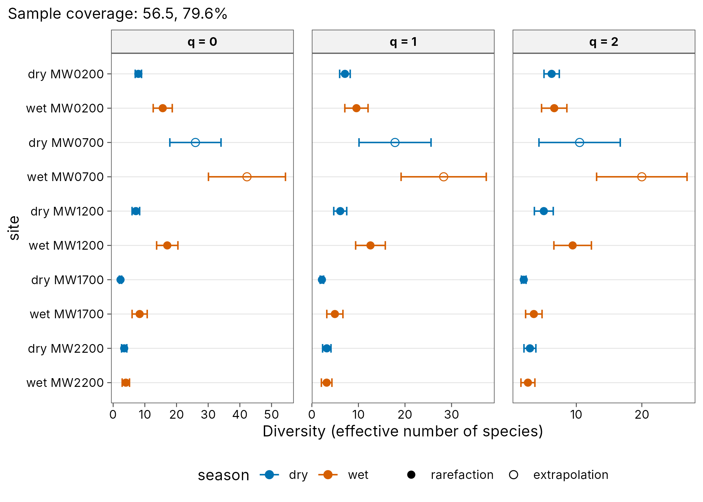
std
#> # A tibble: 30 x 10
#> season site q m method coverage diversity se lower upper
#> <chr> <chr> <dbl> <dbl> <chr> <dbl> <dbl> <dbl> <dbl> <dbl>
#> 1 dry MW0200 0 11.6 rarefaction 0.565 7.96 0.510 6.96 8.96
#> 2 dry MW0200 1 11.6 rarefaction 0.565 7.10 0.577 5.97 8.23
#> 3 dry MW0200 2 11.6 rarefaction 0.565 6.24 0.596 5.07 7.40
#> 4 wet MW0200 0 45.1 rarefaction 0.796 15.7 1.54 12.6 18.7
#> 5 wet MW0200 1 45.1 rarefaction 0.796 9.57 1.27 7.08 12.1
#> 6 wet MW0200 2 45.1 rarefaction 0.796 6.63 0.985 4.70 8.56
#> 7 dry MW0700 0 46.0 extrapolation 0.565 26.0 4.12 17.9 34.1
#> 8 dry MW0700 1 46.0 extrapolation 0.565 17.9 3.95 10.1 25.6
#> 9 dry MW0700 2 46.0 extrapolation 0.565 10.5 3.16 4.30 16.7
#> 10 wet MW0700 0 116 extrapolation 0.796 42.2 6.20 30.1 54.4
#> # i 20 more rows
std <- div_standardise(png_ants, .by = season, nboot = 50)
autoplot(std)Observed and asymptotic diversity
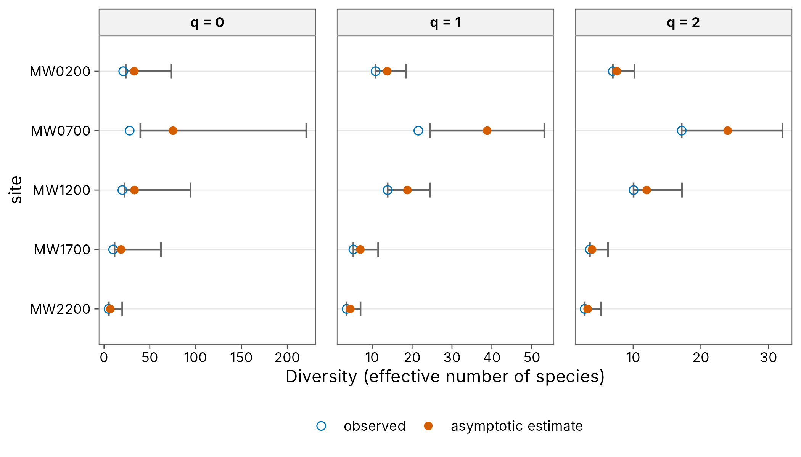
est
#> # A tibble: 15 x 7
#> site q observed estimate se lower upper
#> <chr> <dbl> <dbl> <dbl> <dbl> <dbl> <dbl>
#> 1 MW0200 0 21 32.9 10.5 23.7 73.7
#> 2 MW0200 1 10.9 13.8 2.40 10.9 18.5
#> 3 MW0200 2 6.99 7.6 1.33 6.99 10.2
#> 4 MW0700 0 28 75.3 38.8 39.6 221.
#> 5 MW0700 1 21.6 38.8 7.31 24.5 53.1
#> 6 MW0700 2 17.2 24.0 4.12 17.2 32.0
#> 7 MW1200 0 20 33.3 14.3 22.4 94.4
#> 8 MW1200 1 13.9 18.8 2.92 13.9 24.6
#> 9 MW1200 2 10.1 12 2.65 10.1 17.2
#> 10 MW1700 0 10 18.7 9.94 11.5 62.1
#> 11 MW1700 1 5.30 7.05 2.28 5.30 11.5
#> 12 MW1700 2 3.61 3.92 1.21 3.61 6.30
#> 13 MW2200 0 5 6.87 2.69 5.23 19.9
#> 14 MW2200 1 3.62 4.54 1.30 3.62 7.09
#> 15 MW2200 2 2.85 3.28 0.983 2.85 5.21
est <- div_estimate(wet, nboot = 50)
autoplot(est)Hill diversity profile
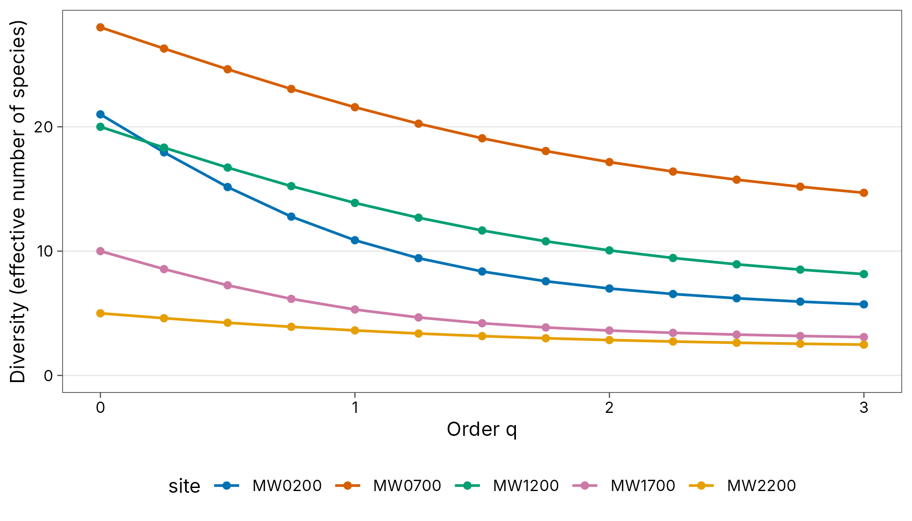
profile
#> # A tibble: 65 x 4
#> site q n diversity
#> <chr> <dbl> <dbl> <dbl>
#> 1 MW0200 0 76 21
#> 2 MW0200 0.25 76 17.9
#> 3 MW0200 0.5 76 15.2
#> 4 MW0200 0.75 76 12.8
#> 5 MW0200 1 76 10.9
#> 6 MW0200 1.25 76 9.43
#> 7 MW0200 1.5 76 8.36
#> 8 MW0200 1.75 76 7.58
#> 9 MW0200 2 76 6.99
#> 10 MW0200 2.25 76 6.55
#> # i 55 more rowsDiversity along a gradient
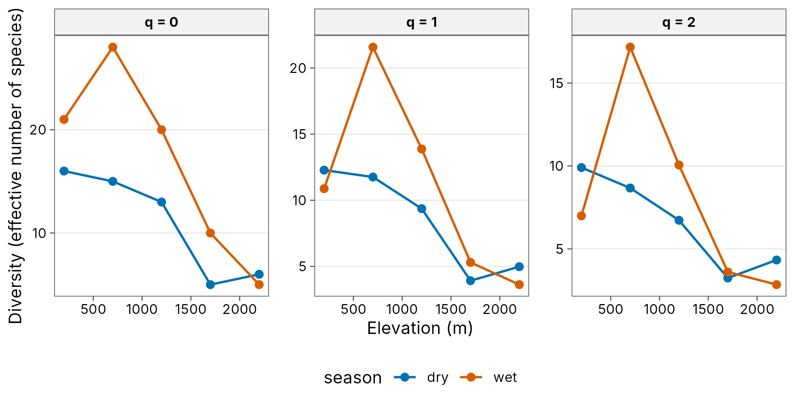
hill
#> # A tibble: 30 x 6
#> season elevation site q n diversity
#> <chr> <int> <chr> <dbl> <dbl> <dbl>
#> 1 dry 200 MW0200 0 47 16
#> 2 dry 200 MW0200 1 47 12.3
#> 3 dry 200 MW0200 2 47 9.91
#> 4 wet 200 MW0200 0 76 21
#> 5 wet 200 MW0200 1 76 10.9
#> 6 wet 200 MW0200 2 76 6.99
#> 7 dry 700 MW0700 0 23 15
#> 8 dry 700 MW0700 1 23 11.8
#> 9 dry 700 MW0700 2 23 8.67
#> 10 wet 700 MW0700 0 58 28
#> # i 20 more rowsSample coverage
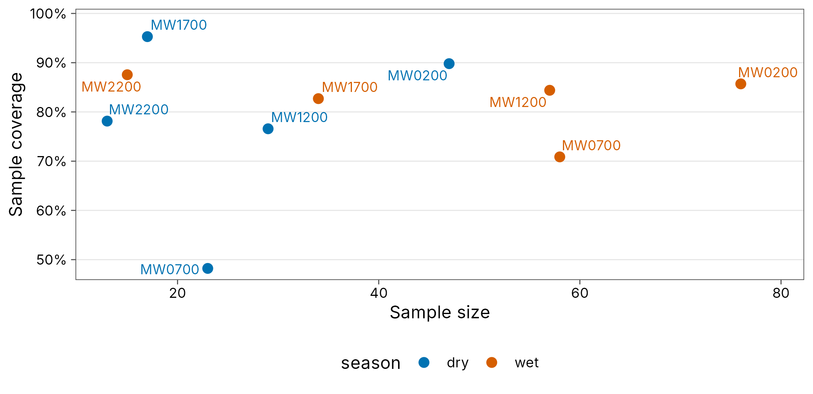
cov
#> # A tibble: 10 x 7
#> season site n s_obs f1 f2 coverage
#> <chr> <chr> <dbl> <int> <int> <int> <dbl>
#> 1 dry MW0200 47 16 5 5 0.898
#> 2 wet MW0200 76 21 11 5 0.857
#> 3 dry MW0700 23 15 12 1 0.482
#> 4 wet MW0700 58 28 17 3 0.709
#> 5 dry MW1200 29 13 7 3 0.766
#> 6 wet MW1200 57 20 9 3 0.844
#> 7 dry MW1700 17 5 1 2 0.953
#> 8 wet MW1700 34 10 6 2 0.827
#> 9 dry MW2200 13 6 3 1 0.781
#> 10 wet MW2200 15 5 2 1 0.876
cov <- div_coverage(png_ants, .by = season)
autoplot(cov)Pairwise beta diversity heatmap
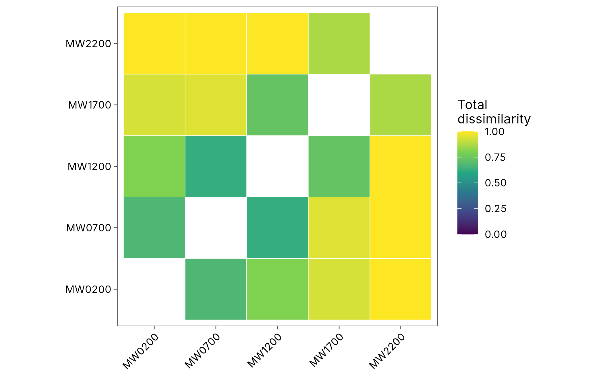
pair
#> # A tibble: 10 x 5
#> site_1 site_2 turnover nestedness total
#> <chr> <chr> <dbl> <dbl> <dbl>
#> 1 MW0200 MW0700 0.619 0.0544 0.673
#> 2 MW0200 MW1200 0.8 0.00488 0.805
#> 3 MW0200 MW1700 0.9 0.0355 0.935
#> 4 MW0200 MW2200 1 0 1
#> 5 MW0700 MW1200 0.55 0.075 0.625
#> 6 MW0700 MW1700 0.9 0.0474 0.947
#> 7 MW0700 MW2200 1 0 1
#> 8 MW1200 MW1700 0.6 0.133 0.733
#> 9 MW1200 MW2200 1 0 1
#> 10 MW1700 MW2200 0.8 0.0667 0.867Multiple-site beta partition
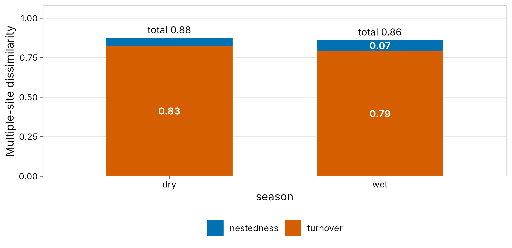
multi
#> # A tibble: 2 x 5
#> season n_sites turnover nestedness total
#> <chr> <int> <dbl> <dbl> <dbl>
#> 1 dry 5 0.827 0.0507 0.877
#> 2 wet 5 0.790 0.0737 0.864
multi <- beta_multi(png_ants, .by = season)
autoplot(multi)Distance decay
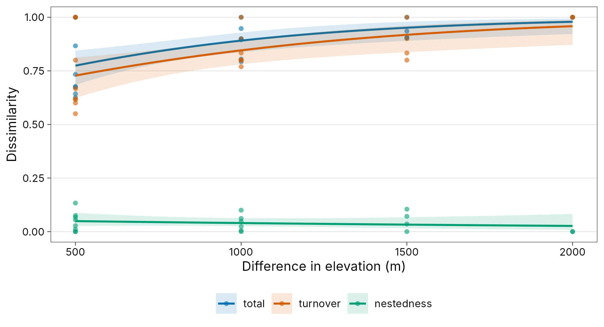
decay
#> # A tibble: 20 x 9
#> season site_1 site_2 turnover nestedness total gradient_1 gradient_2 distance
#> <chr> <chr> <chr> <dbl> <dbl> <dbl> <int> <int> <dbl>
#> 1 dry MW0200 MW0700 0.667 0.0108 0.677 200 700 500
#> 2 dry MW0200 MW1200 0.769 0.0239 0.793 200 1200 1000
#> 3 dry MW0200 MW1700 0.8 0.105 0.905 200 1700 1500
#> 4 dry MW0200 MW2200 1 0 1 200 2200 2000
#> 5 dry MW0700 MW1200 0.615 0.0275 0.643 700 1200 500
#> 6 dry MW0700 MW1700 0.8 0.1 0.9 700 1700 1000
#> 7 dry MW0700 MW2200 0.833 0.0714 0.905 700 2200 1500
#> 8 dry MW1200 MW1700 1 0 1 1200 1700 500
#> 9 dry MW1200 MW2200 0.833 0.0614 0.895 1200 2200 1000
#> 10 dry MW1700 MW2200 1 0 1 1700 2200 500
#> 11 wet MW0200 MW0700 0.619 0.0544 0.673 200 700 500
#> 12 wet MW0200 MW1200 0.8 0.00488 0.805 200 1200 1000
#> 13 wet MW0200 MW1700 0.9 0.0355 0.935 200 1700 1500
#> 14 wet MW0200 MW2200 1 0 1 200 2200 2000
#> 15 wet MW0700 MW1200 0.55 0.075 0.625 700 1200 500
#> 16 wet MW0700 MW1700 0.9 0.0474 0.947 700 1700 1000
#> 17 wet MW0700 MW2200 1 0 1 700 2200 1500
#> 18 wet MW1200 MW1700 0.6 0.133 0.733 1200 1700 500
#> 19 wet MW1200 MW2200 1 0 1 1200 2200 1000
#> 20 wet MW1700 MW2200 0.8 0.0667 0.867 1700 2200 500
set.seed(1)
beta_decay_model(decay)
#> # A tibble: 2 x 10
#> season model component n_pairs a b half_distance pseudo_r2 aic
#> <chr> <chr> <chr> <int> <dbl> <dbl> <dbl> <dbl> <dbl>
#> 1 dry exponen~ total 10 0.257 7.50e-4 924. 0.143 -9.21
#> 2 wet exponen~ total 10 0.897 2.36e-3 293. 0.694 -17.6
#> # i 1 more variable: p.value <dbl>
decay <- beta_decay(png_ants, elevation, .by = season)
autoplot(decay, xlab = "Difference in elevation (m)")
beta_decay_model(decay)Pairwise Hill dissimilarity
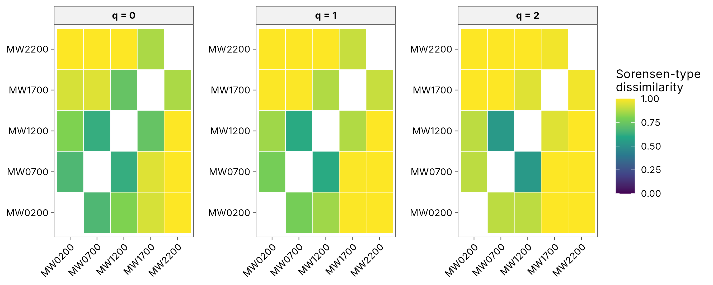
hp
#> # A tibble: 30 x 10
#> site_1 site_2 q gamma alpha beta dis_sorensen dis_jaccard
#> <chr> <chr> <dbl> <dbl> <dbl> <dbl> <dbl> <dbl>
#> 1 MW0200 MW0700 0 41 24.5 1.67 0.673 0.805
#> 2 MW0200 MW1200 0 37 20.5 1.80 0.805 0.892
#> 3 MW0200 MW1700 0 30 15.5 1.94 0.935 0.967
#> 4 MW0200 MW2200 0 26 13 2 1 1
#> 5 MW0700 MW1200 0 39 24 1.62 0.625 0.769
#> 6 MW0700 MW1700 0 37 19 1.95 0.947 0.973
#> 7 MW0700 MW2200 0 33 16.5 2 1 1
#> 8 MW1200 MW1700 0 26 15 1.73 0.733 0.846
#> 9 MW1200 MW2200 0 25 12.5 2 1 1
#> 10 MW1700 MW2200 0 14 7.5 1.87 0.867 0.929
#> # i 20 more rows
#> # i 2 more variables: dis_turnover_sorensen <dbl>, dis_turnover_jaccard <dbl>
wet <- dplyr::filter(png_ants, season == "wet")
hp <- beta_hill_pair(wet, abundance = workers)
autoplot(hp)Coverage-standardised beta diversity
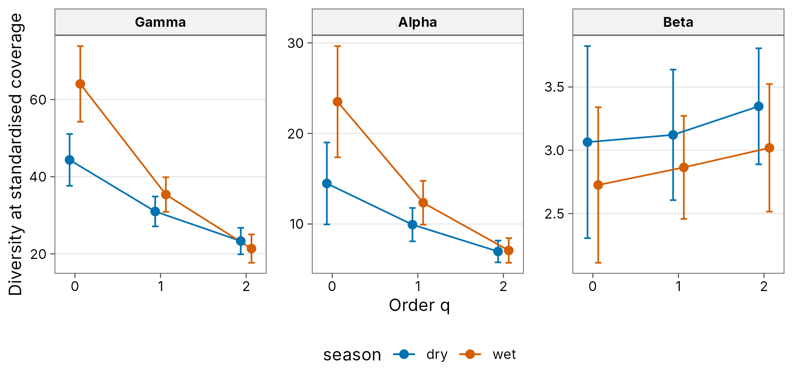
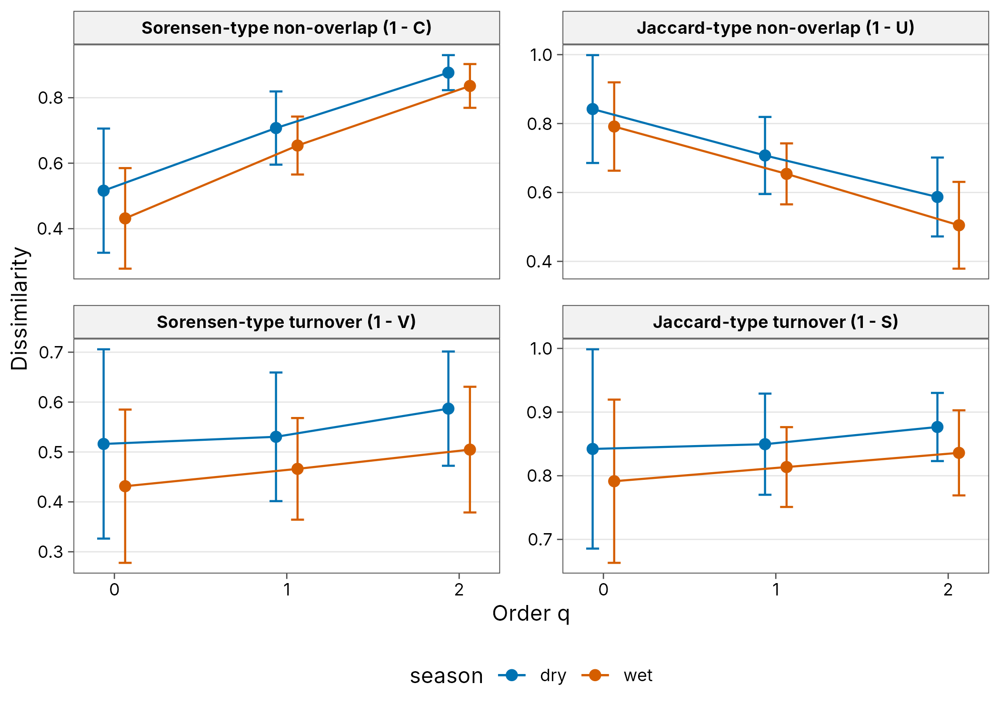
hb[c("season", "q", "gamma", "alpha", "beta", "beta_lower", "beta_upper")]
#> # A tibble: 6 x 7
#> season q gamma alpha beta beta_lower beta_upper
#> <chr> <dbl> <dbl> <dbl> <dbl> <dbl> <dbl>
#> 1 dry 0 44.4 14.5 3.06 2.31 3.82
#> 2 dry 1 31.0 9.93 3.12 2.61 3.64
#> 3 dry 2 23.3 6.97 3.35 2.89 3.81
#> 4 wet 0 64.1 23.5 2.73 2.11 3.34
#> 5 wet 1 35.4 12.3 2.86 2.46 3.27
#> 6 wet 2 21.4 7.08 3.02 2.52 3.52Greyscale for print
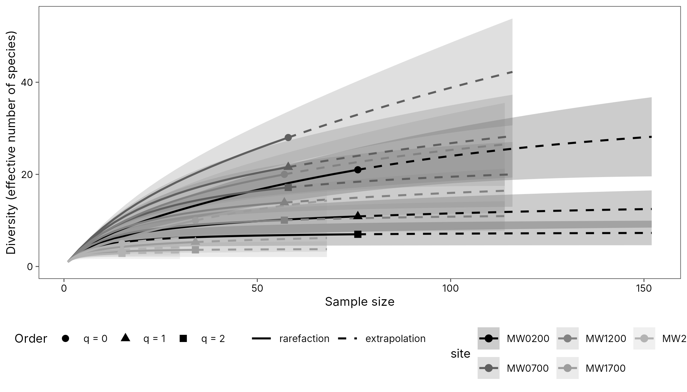
curves
#> # A tibble: 570 x 8
#> site q m method diversity coverage lower upper
#> <chr> <dbl> <dbl> <chr> <dbl> <dbl> <dbl> <dbl>
#> 1 MW0200 0 1 rarefaction 1 0.132 1 1.00
#> 2 MW0200 0 5 rarefaction 3.92 0.445 3.56 4.28
#> 3 MW0200 0 9 rarefaction 5.90 0.585 5.09 6.70
#> 4 MW0200 0 13 rarefaction 7.44 0.655 6.24 8.64
#> 5 MW0200 0 17 rarefaction 8.75 0.695 7.20 10.3
#> 6 MW0200 0 21 rarefaction 9.93 0.721 8.07 11.8
#> 7 MW0200 0 25 rarefaction 11.0 0.740 8.88 13.2
#> 8 MW0200 0 29 rarefaction 12.0 0.754 9.64 14.4
#> 9 MW0200 0 33 rarefaction 13.0 0.766 10.4 15.6
#> 10 MW0200 0 38 rarefaction 14.1 0.780 11.2 17.1
#> # i 560 more rows
autoplot(curves, palette = "grey", facet = FALSE,
theme = theme_tidydiversity(base_size = 9, grid = "none"))Ordination triplot
An RDA of the Wanang butterflies constrained by year and month: sites, the ten best-fitting species (red arrows), the month gradient (dark arrow), year centroids and ellipses for each year.
Shared species: Venn diagram
plot_venn() counts the species found in each combination
of two to four groups. Here, ant species at four elevations on Mt
Wilhelm.
Phylogenetic diversity
plot_phylo() draws the tree with each species’ relative
abundance per site. The coloured branches lead to the frogs found at 200
m: their total length is Faith’s PD for that site. The tree here is a
taxonomic tree (family, genus, species) with Grafen branch lengths; use
a dated phylogeny where one exists.
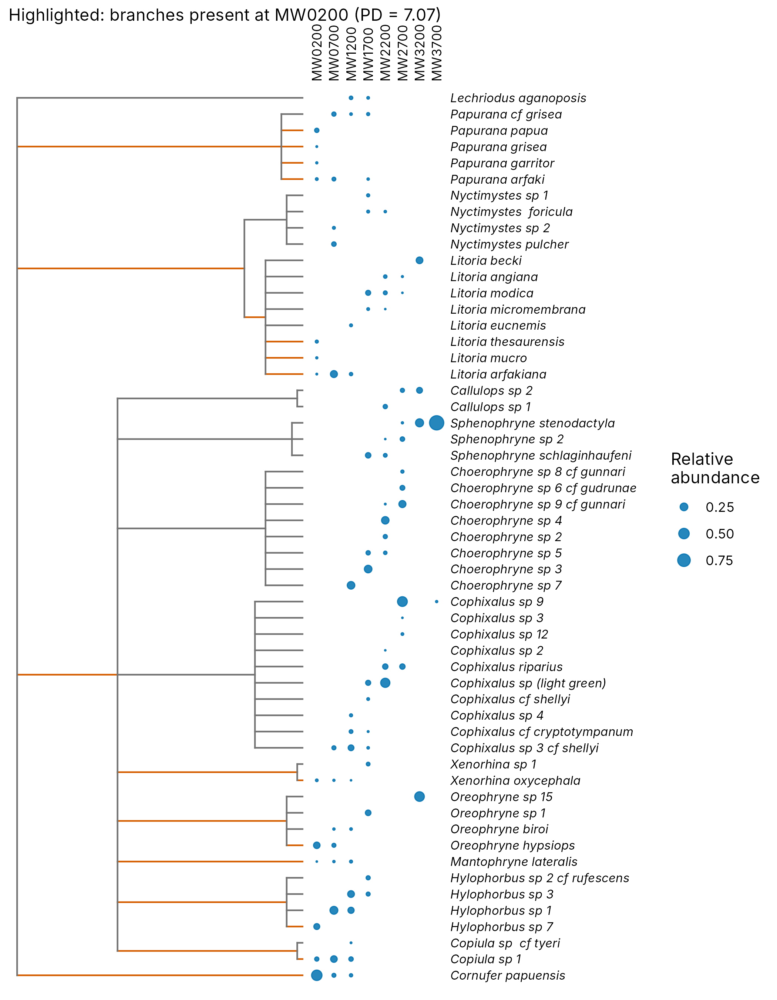
frogs <- mutate(png_frogs,
genus = sub(" .*", "", scientific_name),
tip = gsub(" ", "_", scientific_name)
)
tax <- distinct(as.data.frame(frogs[c("family", "genus", "tip")]))
tax[] <- lapply(tax, factor)
tree <- ape::compute.brlen(ape::as.phylo(~ family / genus / tip, data = tax))
plot_phylo(tree, frogs, species = tip, abundance = abundance, highlight = "MW0200")Functional trait space
plot_trait_space() places the alpine plants of the
aravo data in a PCoA of Gower trait distances. Each hull
encloses the species found under one level of zoogenic disturbance (its
area is the two-dimensional functional richness) and the diamonds are
cover-weighted mean positions.
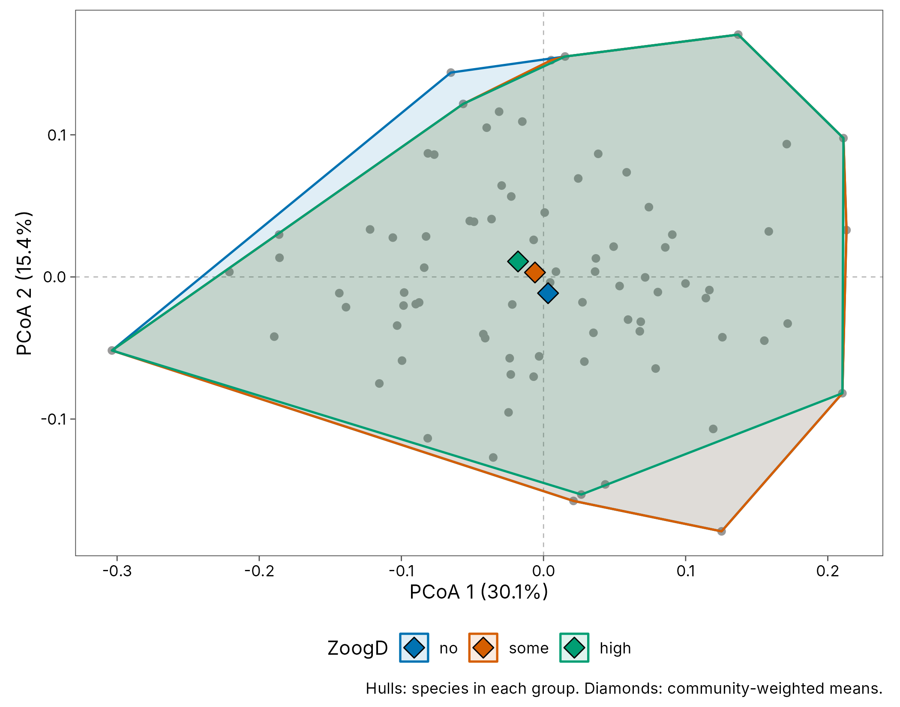
aravo <- data_aravo()
plot_trait_space(aravo$traits, aravo$community, group = ZoogD, abundance = cover)